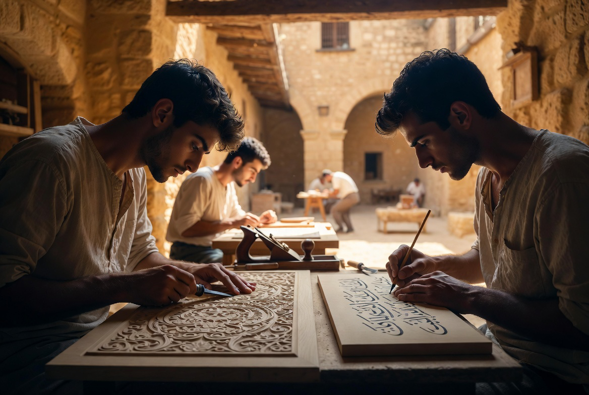
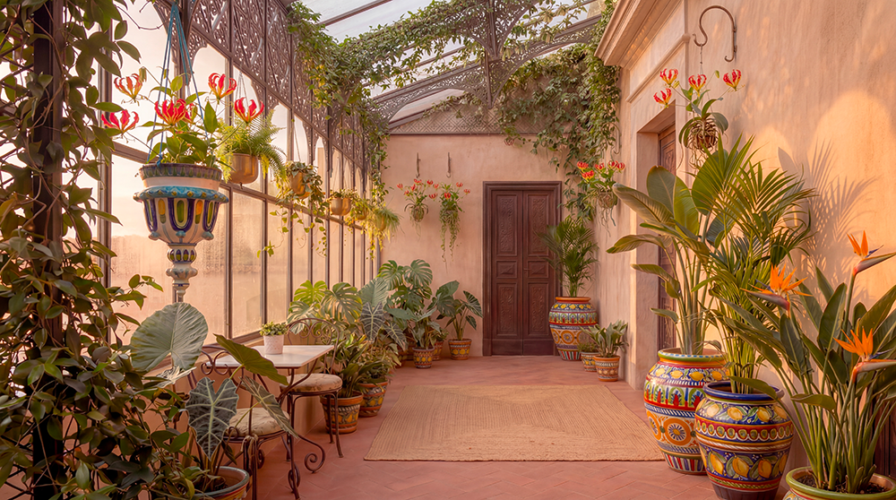

Vie au Riad
La vie du Riad est ordonnée par les cinq prières canoniques. Elles ne sont pas un ornement : elles sont l’ossature du temps.

Le temps n’est pas fragmenté par l’urgence. Il est structuré par la prière, le travail du geste, l’étude et la présence. Les hôtes sont invités à entrer dans ce rythme, non à le consommer comme un spectacle.
Fajr
La prière canonique de l’aube ouvre le jour.
Puis le silence.
L’école coranique suit immédiatement : mémorisation, récitation, attention au souffle et à la posture. Les jeunes apprennent à tenir le corps et la voix dans une même discipline.

Adab, musique, métiers
Leçons d’adab et de rhétorique. On apprend à parler peu, à parler juste, à tenir le silence quand il le faut.
Puis la musique et le chant traditionnels : l’oud, le ney, le bendir, la voix posée. Le corps apprend le rythme ; la voix apprend la retenue et la beauté.
Le travail des métiers commence dans la clarté du matin : le bois, le geste, la matière. Rien n’est précipité. On apprend à regarder, à attendre, à exécuter avec exactitude.

Dhuhr
La prière canonique de midi ramène chacun au centre.
Le repas est simple, partagé, presque silencieux. La présence compte plus que les paroles.

Geste et Asr
Retour aux ateliers et au jardin. Le corps travaille, les mains apprennent, le regard se forme.
Asr — la prière canonique de l’après-midi — marque le tournant du jour.
Puis, selon les jours : étude, répétition musicale, chant, ou travail plus exigeant sur le geste.

Maghrib
La prière canonique du coucher du soleil.
Le repas du soir rassemble la maison. Parfois une lecture, parfois un peu de musique. Toujours la même retenue.

Isha
La dernière prière canonique ferme le jour public.
Ensuite vient le silence de la maison. Chacun regagne sa place. Ce qui doit rester discret reste discret. Ce qui doit mûrir, mûrit.
Les hôtes sélectionnés sont invités à entrer dans ce rythme. Non comme spectateurs, mais comme présences temporaires dans une maison qui existe indépendamment d’eux.